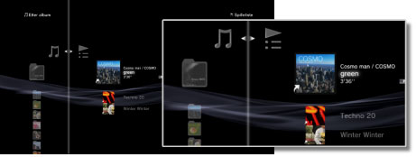
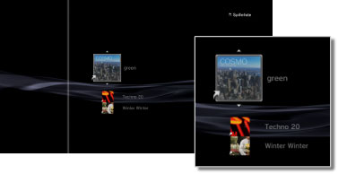

Musikk > Bruke spillelister > Redigere spillelister
Redigere spillelister
Du kan legge til spor eller slette spor fra en spilleliste eller endre rekkefølgen på sporene i en spilleliste.
Legge spor til spillelister
1. |
Velg |
|---|---|
2. |
Velg spillelisten du vil redigere, og trykk deretter på |
3. |
Velg [Rediger].  |
4. |
Med retningsknappene, velg sporet som du vil legge til fra spillelisten blant sporene som er lagret på harddisken. |
 (Musikk) >
(Musikk) >  (Spilleliste).
(Spilleliste). -knappen.
-knappen. -knappen for å stoppe redigeringen.
-knappen for å stoppe redigeringen.Slette spor fra spillelister
1. |
Velg |
|---|---|
2. |
Velg spillelisten du vil redigere, og trykk deretter på |
3. |
Velg [Rediger]. |
4. |
Velg sporet som du vil slette fra spillelisten på høyre og trykk deretter på |
 -knappen.
-knappen.Tips
- Selv om et spor slettes fra en spilleliste, kan ikke musikkfilen slettes fra harddisken.
- Hvis et spor som ble lagt til en spilleliste slettes fra harddisken, blir sporet også automatisk slettet fra spillelisten.
Endre rekkefølgen på spor i spillelister
1. |
Velg |
|---|---|
2. |
Velg spillelisten du vil redigere, og trykk deretter på |
3. |
Velg [Rediger]. |
4. |
Velg sporet som du vil flytte, og trykk deretter på  |
5. |
Bruk |
 -knappen.
-knappen.
 -knappene for å flytte sporet til ønsket posisjon, og trykk deretter på
-knappene for å flytte sporet til ønsket posisjon, og trykk deretter på